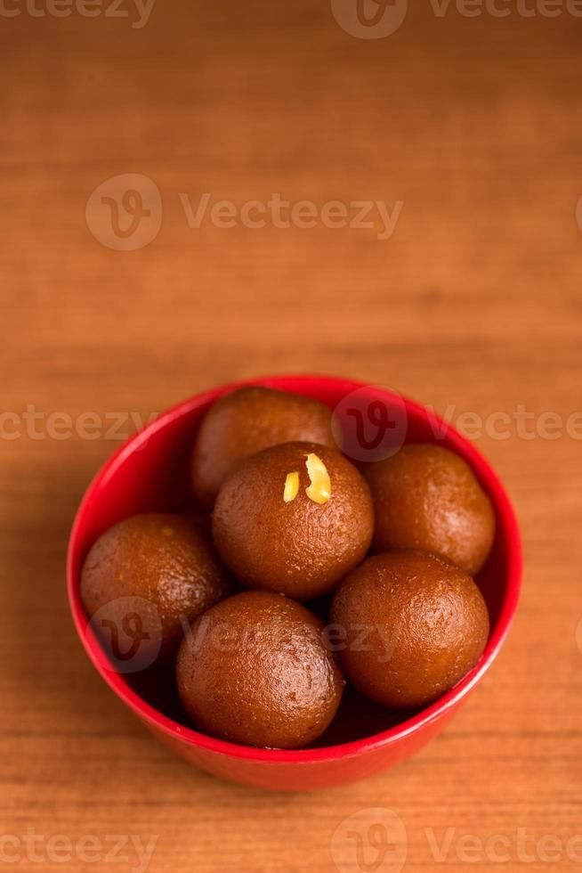

Gulab Jamun

Description
This is a delicious Gulab Jamun recipe that everyone will love! make sure to follow the instructions carefully, and enjoy your meal!
Ingredients
- 1 cup milk powder
- 1/4 cup all-purpose flour
- 1/4 teaspoon baking soda
- 2 tablespoons ghee (clarified butter)
- 1/4 cup milk
- 1 cup sugar
- 1 cup water
- 1/4 teaspoon cardamom powder
- Oil for deep frying
Steps
- In a mixing bowl, combine milk powder, all-purpose flour, and baking soda.
- Add ghee and mix well until the mixture resembles breadcrumbs.
- Gradually add milk and knead the mixture into a smooth dough.
- Divide the dough into small portions and roll them into smooth balls.
- Heat oil in a deep frying pan over medium heat.
- Fry the balls in batches until they turn golden brown. Remove and drain on paper towels.
- In a separate pan, combine sugar and water to make a syrup. Bring it to a boil and add cardamom powder.
- take it out on plate
Back to Home